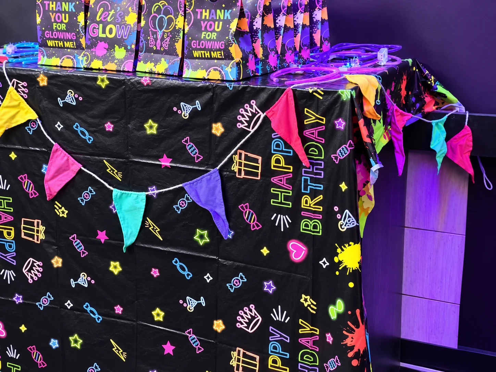
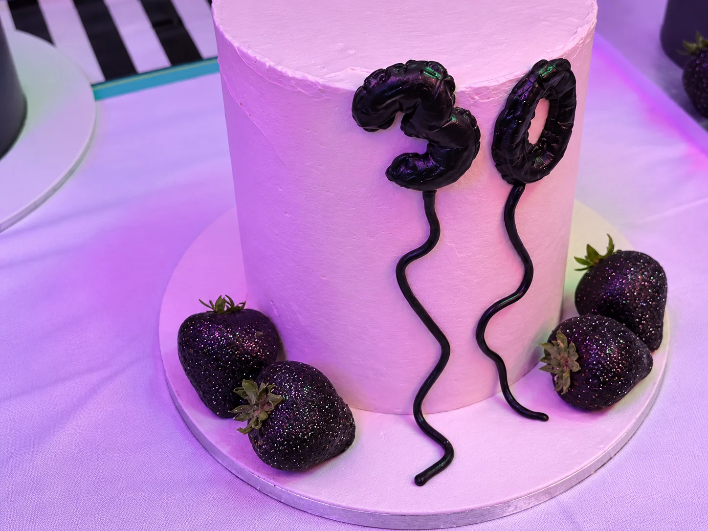

Kids' birthday parties
Give younger guests more to do with board games, console gaming and venue challenges, with desserts and drinks available around the celebration.
Looking for a birthday party venue in Blackburn that keeps the group entertained? Celebrate with board games, PS5 gaming, desserts and flexible table or private-hire options for children, families and friends.

The Board Game Café at Unit 12, The Stables, Eanam is a flexible Blackburn birthday venue for children, families and groups of friends.
Give younger guests more to do with board games, console gaming and venue challenges, with desserts and drinks available around the celebration.
Mix games, seating and treats in one relaxed venue so different ages can enjoy the same birthday together.
For a bigger celebration, ask about private venue hire in Blackburn and exclusive use of the space.
Keep the structure simple and let the activities do the work.
Get settled, order drinks and give everyone time to find their feet.
Move between board games, consoles and venue challenges depending on the group.
Add cake, ice cream, milkshakes or hot drinks around the games.
Keep it casual at a few tables or ask about private use for a bigger birthday.


A few practical details help us recommend the right birthday format without a long back-and-forth.
Tell us the preferred date, approximate guest count and whether the group is mainly children, adults or a mix.
Let us know whether you want casual tables, organised games and challenges, or to discuss exclusive use for a larger celebration.
Mention cake, desserts, drinks or catering requirements when you enquire so we can discuss them alongside the space.